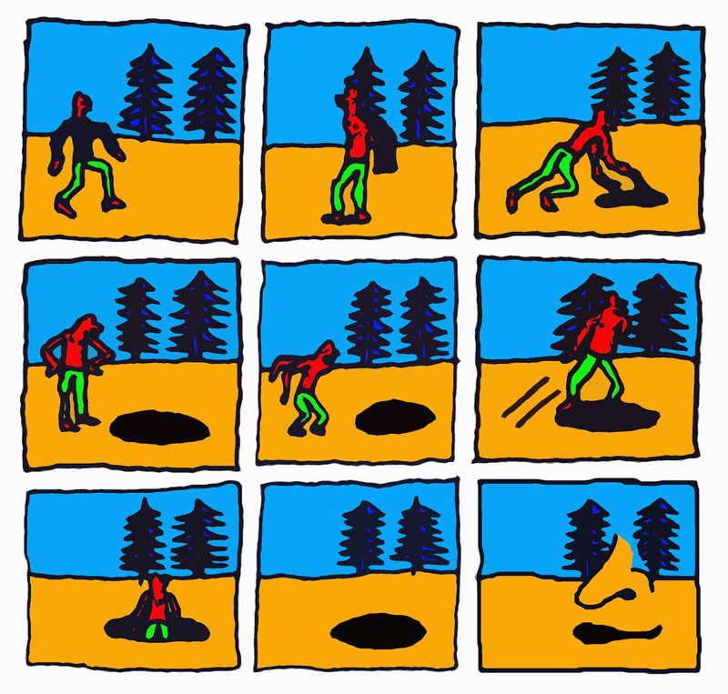
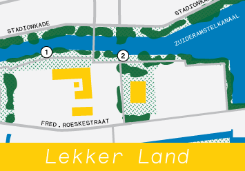
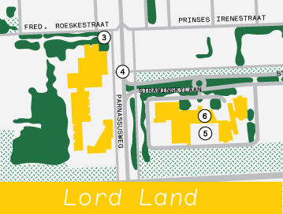
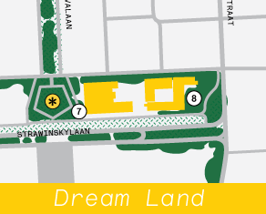

Dreamland is not your typical audio guide. Instead of leading you or explaining the artworks on the route, this audio experience will accompany you as you walk. It will be by your side wherever you feel like going. You will hear love stories set in airports, dreamy songs, and curious thoughts.
Dreamland An Audio Companion
By Rosa Sijben, Styrmir Örn Guðmundsson and David Bernstein
Recorded by Jaap Sijben
Edited by Sjoerd Leijten
The audio companion will be available from 12.06.015 on.
* Make sure you listen with headphones because it is recorded in 3D Binaural Surround sound.


Lekker Land accompanies the area around artwork 1 and 2.

Lord Land accompanies the area around artwork 3, 4, 5 and 6.

Dream Land accompanies the area around artwork 7 and 8.